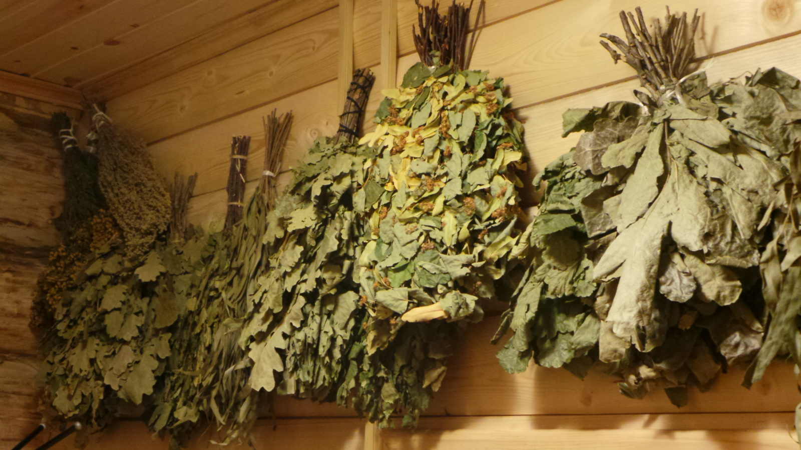
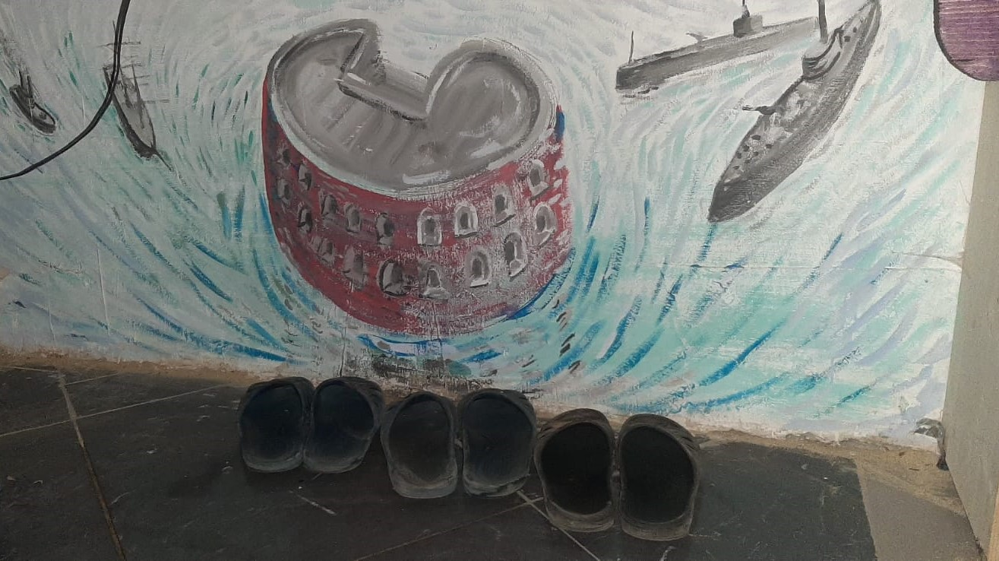
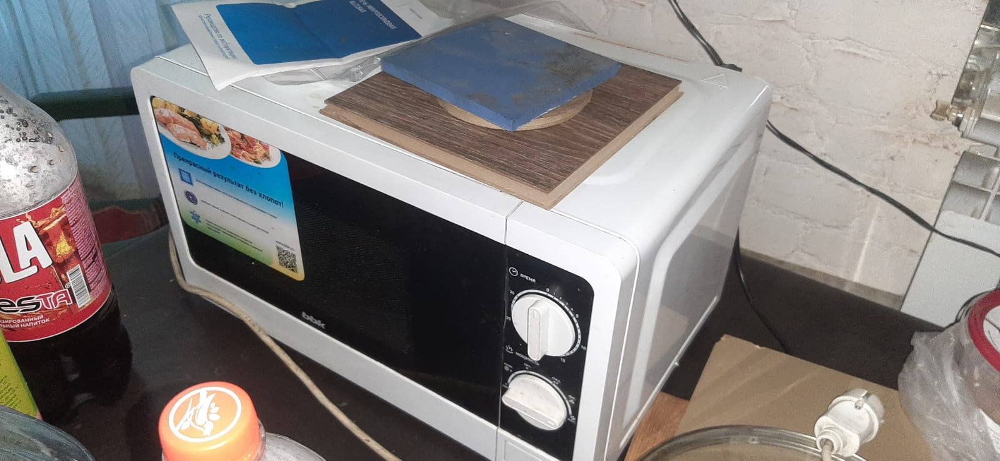
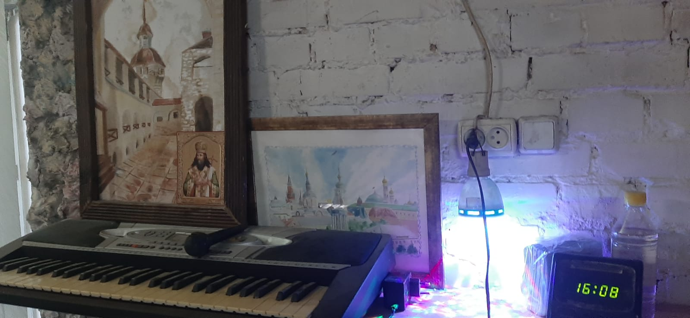
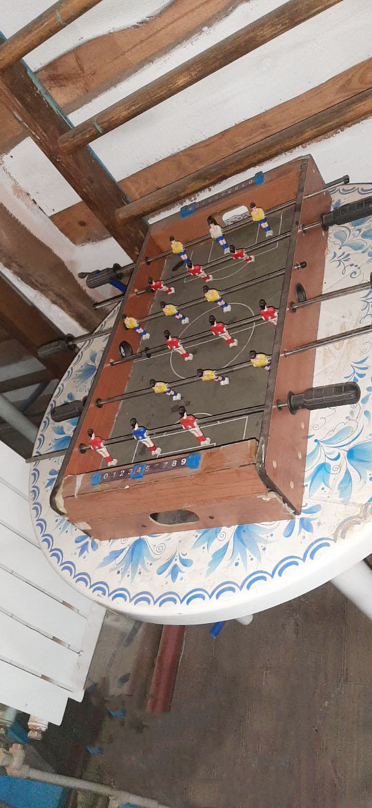
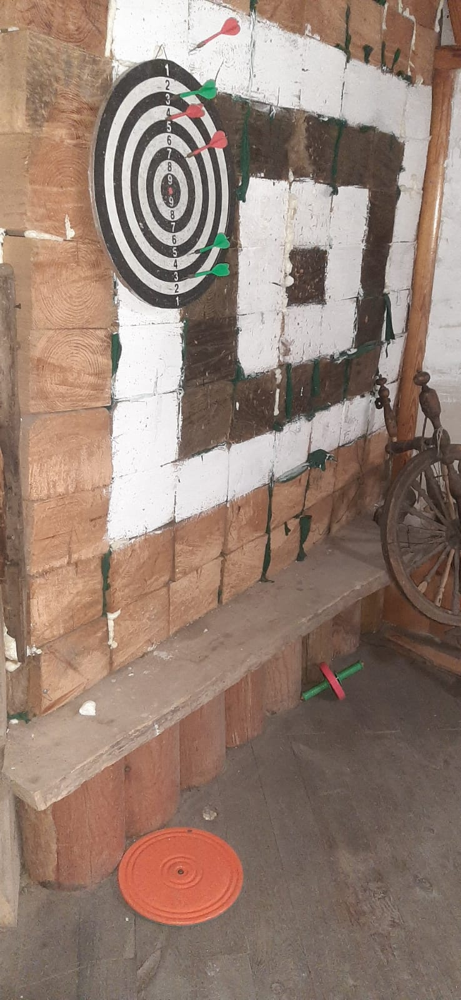

Где нас найти?
Наше заведение находится по адресу: посёлок Красная Яруга (Белгородская область) улица Театральная, дом 9.Чем мы лучше наших конкурентов?
Поммимо бани, у нас есть солярий и бильярдный стол. Да и вообще у нас есть множество развлечений: дартс, настольный футбол, турник, детская лесенка, два борцовских мата для детей, боксёрский мешок и другие тренажёры. Выбор должен следовать за Вами! Мы будем рады каждому новому клиенту. Мы выделяем огромную благодарность тем, кто будет пользоваться нашими услугами! Данное место лучше подойдёт для военных, охотников, спортсменов или компании взрослых с детьми. На улице есть место для мангала и летняя веранда.Цена.
Разумеется, каждого из Вас интересует, что же по цене такого удовольствия? А мы Вам ответим, что цены на наши услуги на 40% меньше, чем у наших конкурентов. Возможно Вы подумаете так, - "Раз цена маленькая, значит качество будет плохое". Нет и ещё раз нет, качество у нас конечно не супер премиум-класс, но почти всё, что нужно почти всем нашим клиентам у нас есть!| Продолжительность | Цена |
|---|---|
| 1 час | 1000 рублей сразу до 8 человек |
| от 2 часов | 700 рублей сразу до 8 человек |
Атрибуты в бане.
Чем можно пользоваться в бане? У нас в бане есть так называемые атрибуты, которыми каждый клиент имеет пользоваться пока длиться его время. Предметами, которых нет в этом списке пользоваться запрещено!| Название атрибута | Информация о атрибуте | Картинка |
|---|---|---|
| Веники берёзовые | 250 рублей за штуку. При покупке можно использовать без ограничений. |  |
| Тапки | Прокат 50 рублей. При прокате можно использовать без ограничений. |  |
| Микроволновка | Можно пользоваться бесплатно. Но просим оставить чистой. |  |
| Синтезатор | Можно пользоваться бесплатно. Обращаться с ним аккуратно! |  |
| Настольный футбол | Можно пользоваться бесплатно. Просим не убирать его с того места где он стоит. |  |
| Дартс, диск и роликовое колесо | Можно пользоваться бесплатно. Просим соблюдать технику безопасности. |  |
Правила поведения!
При нарушении данных правил предусмотрен штраф! Его размер зависит от серьёзности нарушения!